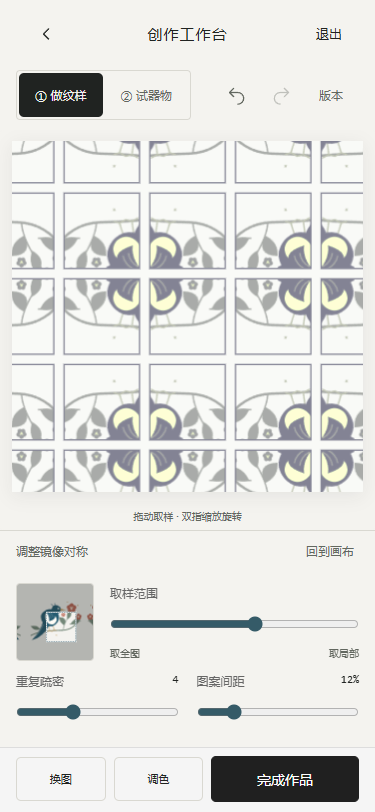
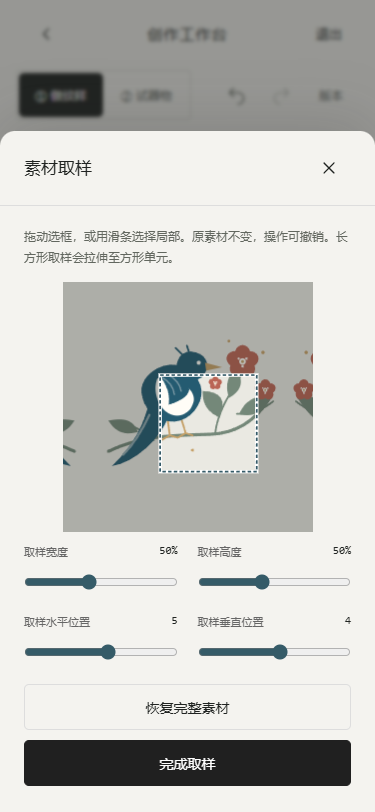

2026-10-30。沿用既有H5、三底栏、IndexedDB、SVG与Three.js。没有创建第二套应用，没有发布。
打开本地版本 · 首页开始共创 → 选择灵感 → 继续编辑。重新启动时在项目根目录设置PORT=8879，再运行npm start。
| 能力 | 实际行为 |
|---|---|
| 手机工具分组 | 取样、排布、效果、构图、底色；面板可展开收起，保留画布与底部操作。 |
| 源素材取样 | 示意SVG或用户图片均支持局部选框、真实触摸拖动、宽高与位置滑条、恢复完整素材。源文件不改变；非方形取样拉伸成方形单元，界面有说明。 |
| 8种几何排布 | 单幅、整齐重复、横错位、纵错位、镜像、四向旋转、蜂窝错列、环形花冠。包含密度、留白、翻转与本地组合变体。不是AI生成。 |
| 颜色与表面 | 原色、黑白、单色、自选双色；亮度、对比度、饱和度、色相、不透明度、单元边框。效果共同作用于SVG、PNG与3D贴图。 |
| 构图与版本 | 原有移动/缩放/旋转/可见范围增加居中、左右90度旋转；快速快照、缩略图、当前与旧版本对比、恢复撤销。旧版本缺失新参数恢复为默认值。 |
| 导出与平铺 | PNG/SVG，512/1024/2048px，透明或画布底色。上传位图内嵌SVG，非自动矢量化。重复/横错位/镜像支持单元导出与3×3平铺检查；单元不含整幅位移/裁切/重复密度，单元旋转与缩放仍保留。 |
新增 prototype/workbench.js、workbench.css；修改 prototype/pattern-texture.js、pattern-layouts.js、editor-model.js、model.js、foundation.js、work-result.js、schema.d.ts、app.js、index.html。新增 tests/workbench.test.cjs、scripts/qa-workbench.cjs、qa-workbench-pixels.cjs。README和构建产物根index.html、单文件HTML同步更新。
单测日志 · lint · 构建 · 浏览器检查 · 像素检查


参考 Repper官方功能介绍的取样、重复、颜色效果、快照和导出思路，未复制专有源码/素材。实现可在当前本地手机原型真实运行的功能，没有宣称复刻全部30多种镶嵌或全部壁纸群。半调、自动边缘融合、超大输出、外部图库、云同步和协作没有接入。
仍需实体手机、iOS Safari和微信内浏览器测试。图像AI继续暂停，学校文本AI没有新增真实调用；正式馆藏、馆方权益、工厂工艺授权未接入。导出文件为设计素材，非生产批准文件。